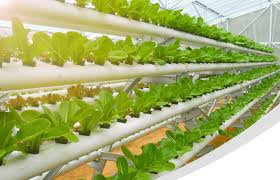

Tanaman Hidroponik

Apa Itu Hidroponik?
Hidroponik adalah cara membudidayakan tanaman dengan memanfaatkan air tanpa menggunakan tanah sebagai media tanamnya, sehingga pada hidroponik sangat mementingkan dalam memenuhi nutrisi tanaman.
Tanaman dapat tumbuh dengan subur dan menghasilkan buah secara lebih cepat walaupun tanpa menggunakan tanah sebagai media tanamnya. Dimanapun tempat tumbuh tanaman akan selalu tumbuh baik jika nutrisinya terpenuhi. Pada metode hidroponik fungsi dari media pengganti tanahnya yaitu untuk menyangga tanaman saja dan yang terpenting yaitu air berfungsi untuk melarutkan nutrisi yang akan di serap oleh akar tanaman. Dengan metode hidroponik maka petani dapat meghemat tempat maupun waktu.

Adapun beberapa manfaat hidroponik yang bisa di dapatkan, diantaranya:
- Menghasilkan kualitas tanaman yang lebih baik.
- Tanaman dapat terhindar dari hama.
- Penggunaan pumuk menjadi lebih hemat.
- Hemat tempat, karena tidak memerlukan lahan tahan yg luas untuk menana tanaman.
- Tanaman dapat tumbuh dengan cepat.
- Hemat tenaga dan waktu.

Kelebihan dan Kekurangan Hidroponik
Kelebihan hidroponik
Beberapa keuntungan yang bisa di dapatkan dari tanaman hidroponik misalnya seperti:
Produksi tanaman lebih tinggi jika di bandingkan dengan metode tanam dengan tanah.
Tanaman dapat terbebas dari penyakit dan juga hama.
Pemakaian pupuk lebih hemat dan tumbuh tanaman lebih cepat.
Dapat mengganti tanaman dengan mudah.
Mempermudah pekerjaan maupun perawatan tanaman.
Tanaman akan memberikan hasil secara berkelanjutan.
Kekurangan hidroponik
Beberapa kekurangan dai metode tanam hidroponik, diantaranya:
Memerlukan biaya lebih di awal-awal, terutama jika berencana untuk menanam tanaman secara hidroponik dalam sekala besar.
Membutuhkan alat-alat khusus. Alat-alat untuk metode tanam hidroponik masih jarang di temukan di sekitar kita.
Memerlukan pengetahuan dan keterampilan khusus karena metode tanamnya tidak pada lahan tanah.
Dan juga membutuhkan ketelitian yang lebih, karena nutrisi untuk tanaman harus benar-benar di awasi secara cermat. (Baca Juga: Pengertian kultur jaringan dan manfaatnya terlengkap).